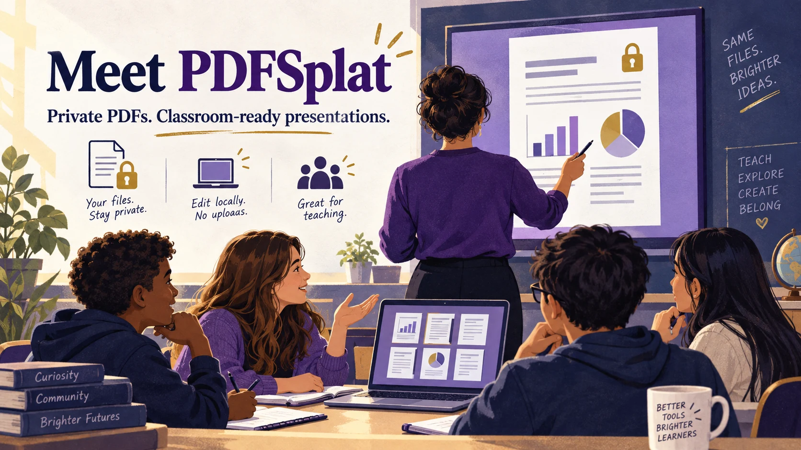

Illustration created with AI.
October 9, 2026 · DrawSplat v3.1.31 · By Miguel Guhlin
Meet PDFSplat: A Private PDF Toolkit for Classroom Presentations
You have a PDF ready for a faculty meeting. The first page looks great. Then the screen fills with tabs, toolbars, and a sidebar competing with your content. Or you discover that one page is sideways just as you begin sharing your screen.
A PDF should be easy to present. It should also be easy to prepare for the people who will read it.
PDFSplat, part of DrawSplat, brings those jobs together. Open your document, arrange the pages, add a question or annotation, and switch into a presentation view. You can also turn the edited pages into a portable WebDeck presentation. Your document processing happens on your device, without a document upload or an account.
Present a PDF without rebuilding your slides
Choose Present PDF to display one edited page at a time against a dark background. The viewer uses the pages as they currently appear, including rotations, crops, text, images, signatures, and drawings. It keeps your editing workspace separate, so moving through the presentation does not move or modify the page you were editing.
The controls fade away in presentation mode. Move your pointer over the bottom toolbar or tab into it to bring them back. On touch devices, use the visible controls. Choose Full screen to open the viewer and ask your browser to fill the display. Browser and device support determine whether that request succeeds; the page-filling viewer remains available when full screen is unavailable.
Here are the controls to know before your next meeting:
| Task | Control |
|---|---|
| Enter presentation view | Present PDF; Ctrl+L / Command+L when the browser allows the shortcut |
| Advance or go back | Next/Previous buttons, arrow keys, Page Down/Page Up, or taps on the page |
| Jump to the beginning or end | Home / End |
| Pause the audience's attention on a blank screen | B for black; W for white; repeat the key or navigate to restore the page |
| Toggle browser full screen | Full screen button or F inside the viewer |
| Show or hide presentation controls | H; pointer hover or keyboard focus also reveals hidden controls |
| End the presentation | Exit presentation or Escape |
| Run a display automatically | Set the slide interval, optionally choose Loop slides, then Start slideshow |
A looping slideshow could work for a classroom welcome display or a station with directions. For a discussion, use the black or white screen to give students a moment to think before you reveal the next page. Automatic playback stops at the last page unless you explicitly enable looping.
For a video meeting, share the PDF viewer window using your meeting application's normal screen-sharing controls. PDFSplat does not join meetings or transmit your files.
Turn your PDF into a WebDeck
Choose Save as → WebDeck v5 (.html) to create a self-contained presentation. Each edited PDF page becomes one slide. The file includes its page images, styles, and presentation controls, so you can open it without an internet connection.
The WebDeck adds keyboard and touch navigation, a progress indicator, a notes panel, browser full screen, printing, and a separate presenter view. Press N or S for notes and V for presenter view. You can resize the presenter notes and use the timer while the audience sees the slides. Printing uses the deck's print layout; saving that print output as a PDF depends on your browser's print dialog.
For more presentation work, import the HTML into ShowSplat. Add speaker notes, organize slides, and export another WebDeck v5.
The conversion preserves appearance by using images. Text inside those page images is not individually editable or selectable. Portrait pages fit within the slide rather than being stretched or cropped. Notes start empty; PDFSplat does not invent a script or quietly copy hidden PDF text into your speaker notes. A text-based accessible alternative is a separate export.
Prepare the document before the audience arrives
PDFSplat offers more than a presentation button. Its tools cover a useful classroom document workflow:
- Open and convert: Drop in a PDF, DOCX, PPTX, EPUB, Markdown, plain text, or a supported image. Common image formats include PNG, JPEG, WebP, GIF, BMP, SVG, and AVIF. Browser decoding determines support for some images. Office and ebook conversions simplify complex layouts; review the result. Older DOC/PPT files and encrypted ebooks are not supported.
- Capture and scan: Capture an open tab or window through the browser's sharing prompt, or turn camera photos and paper scans into PDF pages. Adjust four corners, correct perspective, rotate, and apply contrast, grayscale, or black-and-white cleanup. Scans remain images; there is no OCR.
- Write and annotate: Place new text, images, and signatures at the spot you choose on the page. Add highlights and freehand drawing with a mouse, finger, or stylus. Move and resize added objects, and use Undo/Redo while preparing the document.
- Edit text on the page: Click extractable PDF text to create a visual replacement. Edit inline, apply bold or italic, choose left/center/right alignment, and adjust font size and color. PDFSplat tries to match the original text's appearance; embedded fonts and difficult layouts can limit the match.
- Organize pages: Add PDFs, insert blank or image pages, move, duplicate, delete, reverse, extract, and split pages. Rotate an individual page while keeping the other pages as they are. Crop selected pages, apply a fine rotation, or check for blank pages. Review blank-page suggestions before removing a deliberately sparse page.
- Finish the document: Add headers, footers, and page numbers. Use the tool finder to locate a command without hunting through the sidebar.
A signature here is a placed visual signature, not a cryptographic digital signature. Likewise, editing an existing PDF text run creates a visual replacement; it does not turn the original PDF into a word-processing document.
Save a format that fits the next task
The Save as menu gives you several ways to reuse your work:
| Format | A practical use |
|---|---|
| Distribute the edited pages with visual annotations flattened into the output | |
| PNG, JPG, or WebP | Reuse a page as an image; multiple pages download as numbered images in a ZIP |
| WebDeck v5 HTML | Present the edited pages offline or continue working in ShowSplat |
| Markdown | Reuse extracted, formatted text in a writing workflow |
| DOCX or ODT | Create an editable text document, or choose page images to preserve appearance |
| EPUB | Make a reflowable ebook, or retain page appearance with images; add publishing metadata, navigation, and an optional cover |
| JSON | Obtain structured text and metadata for another workflow; this is not a restorable PDFSplat project |
Text conversion works best with searchable PDFs and straightforward reading order. Columns, tables, unusual fonts, equations, and scans need extra review. Image-based exports retain appearance but do not supply selectable text.
Keep privacy and accessibility in the workflow
PDFSplat processes documents locally. The web version needs to load its application files initially; the downloadable self-host package supports offline use when its included folders stay together. A local browser tool still requires sensible handling of the files you download and share.
Choose Protect / Unprotect to protect a PDF using CipherSplat's encrypted .csplat package or reopen a supported package. This creates a separate encrypted container, rather than a conventional PDF password. The recipient needs a compatible CipherSplat/PDFSplat workflow to open it.
The Accessibility check helps flag missing tags, extractable text, document title and language, added-image descriptions, annotation contrast, and form-related review needs. You can also export a semantic HTML alternative with readable text and descriptions for added images. These tools help you inspect a document; they do not certify accessibility or automatically create a fully tagged PDF.
Need to remove hidden document material from a distribution copy? Sanitize PDF copy rasterizes the visible pages and strips document structures such as metadata, scripts, attachments, forms, annotations, layers, and hidden content. Check that copy carefully: it loses searchable text and may be larger. Remove area by itself only places a visual cover; it is not secure redaction.
The interface offers English, Spanish, Vietnamese, Arabic, Chinese, and a combined Hindi/Urdu option. Switching the interface language does not translate your document. Choose accessible alternatives and meaningful descriptions based on your learners' needs.
What does it cost?
PDFSplat is free, with no account required to use its document tools. Open it on DrawSplat.org or use the download page for local and self-hosted packages. The included startup instructions explain direct opening and local-server alternatives. Browser permissions still apply to camera access, screen capture, and full screen.
What about AI summaries?
PDFSplat does not include an AI summarizer. That can be a useful distinction when working with classroom records or student information: opening, editing, presenting, and exporting a PDF does not require sending it to an AI service. If you choose a separate summarizer, review its privacy terms and your school's rules first, then verify its claims against the actual document.
Start with one document
Open a PDF you already use in class. Fix its page order, add a question where students will notice it, and try the presentation controls. Then download an edited PDF or a WebDeck to use again. A familiar document can become a better teaching resource without requiring a new account, a new slide template, or a document upload.